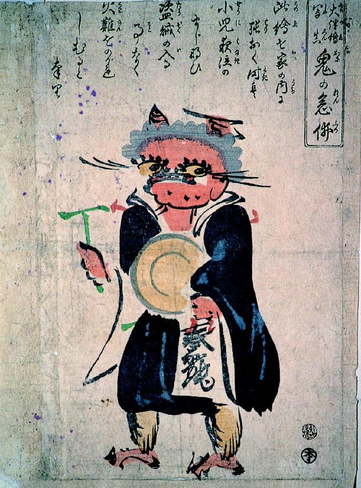

← 图鉴索引

2本の角が生えた赤鬼。法衣を着て鉦を打ちながら歩いている。
出典：親書誌：A5_pushkin_0019：鬼の念仏；オニノネンブツ／日付：2011／資源識別子：A5_pushkin_0019_0001_0000
Copyright (c)2010- International Research Center for Japanese Studies, Kyoto, Japan. All rights reserved.